Analyzing audio with BirdNET in R
The Last Birdbender
2026-11-26
House keeping
WIFI: xyz (pwd: 12345678)
Github repo: https://github.com/SunnyTseng/BirdNET-workshop
About me
Independent data consultant
Developer of
birdnetToolspackageR user since 2015
script –> shinyR –> rmarkdown –> quarto –> package development
using AI agent in R
Sound recording
Hip hop dancing
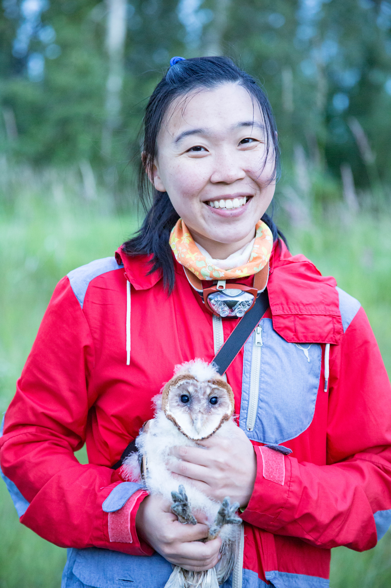
How about you
Your name
Experience with BirdNET
One thing want to do during IOC / in Merida?
Nice to meet you all!
Outline
- Analyzing audios with BirdNET in R (
birdnetR,birdnetTools) - Validating BirdNET detections in R (
birdnetTools) - Playing a game with BirdNET, in R!
Workshop rules
Your turn section
Stickers for practice time
Clone the repo for the code, slides, and dataset
Open the R project
Data? Follow along? Breaks? Practice (blue and red tags)
Copy code chunk instead of typing
For demo: slides/birdnet_analysis_example
For practice:
slides/practice_single_analysis slides/practice_batch_analysis slides/
- This is for bonus slides 🌶️
- This is for your practice🦉
- This is the answer for the practice 🔑
Analyze audio with BirdNET in R
Bioacoustics workflow

Global model - BirdNET

What is BirdNET?
The AI toolkit for conservation bioacoustics
Developed by Cornell Lab of Ornithology AND Chemnitz University of Technology
Led by Stefan Kahl
First publication in 2021
CNN designed to classify sounds
Trained on Macaulay library and Xeno-Canto
Identifies 6,522 classes worldwide (model v2.4)
Identifies 11,700 classes worldwide (model v3.0) - released Nov.26, 2026!
Open source on Github BirdNET-Team
How does BirdNET work?
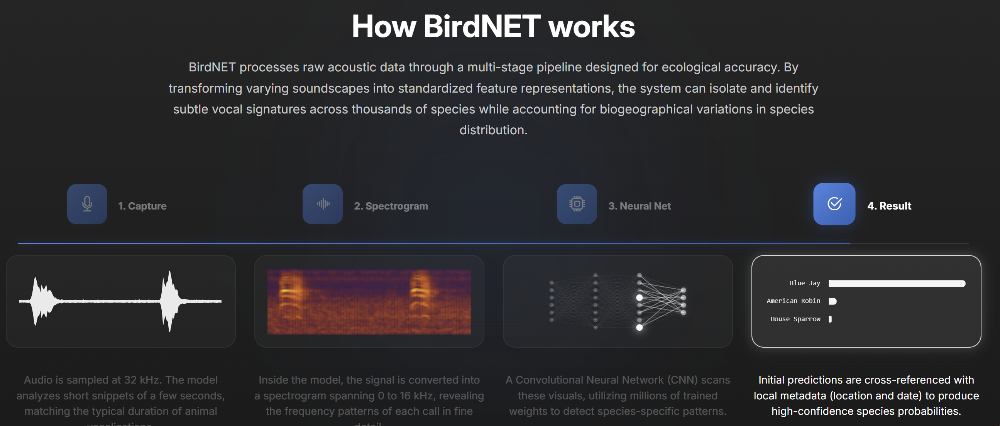
How does BirdNET work? (con’d)
A four-step architecture
- Capture
- Spectrogram
It splits audio into 3-second segments
Segments are converted into spectrograms (images)
- Neural Net
Spectrograms are passed to CNN for image classification
Detection of image patterns
- Result
The output is a table, with detected species and detection confidence
Geofencing output (species occurrence model based on eBird data)
An example is worth a thousand words
Input - audio file
- species detection + confidence
- multi-species detections (0-3 sec)
Output - detection table
Running BirdNET in R
- The main package to run BirdNET in R is
birdnetR. Load it with:
- Load the BirdNET model once per R session with
birdnet_load(). The model files are downloaded in PC for first-time using (slow).
- Identify the path to the audio file:
[1] "C:/Users/sunny/Dropbox/work_remotely/2026_11_IOC in Merida/1. BirdNET workshop/slides/birdnet_analysis_example/20250609_000000.wav"- Then we could make predictions with
birdnet_predict()function:
Running BirdNET in R (con’d)
The output is a list object in R, which can be viewed as a data frame:
“
|>” is called “pipe”, a way to pass the output of one function to the next function. See Ch18-Pipes in R for Data Science.
birdnet_predict() arguments
- Default value of min_confidence is 0.1
- This is a universal minimum confidence, not species-specific
- If lat/lon is not provided, BirdNET will use full list
- Species list calculated by geo model (eBird) for the given lat/lon
- If week is not provided, BirdNET will use year long list
- Week is defined by “four weeks per month” (1 ~ 48)
birdnet_predict() arguments (con’d)

Your turn 🦉
⏱ 10 minutes
Data: ./practice_single_analysis/example_audio_single_analysis.mp3
- Which bird is the dominant species in this example recordings?
- Challenge: set the location to Mérida. Does it change the result?
Hint
Your turn 🔑
Northern Bobwhite (Colinus_nigrogularis)!
Solution
Often, we need batch analysis
Research projects usually consists of more than single audio
Recordings from hundreds of recorders, with months of data
Batch analysis can be done by…
- Raven Pro
- GUI
- Python package
birdnet - R package
birdnetR
Batch analysis in R
In step 3 - identify multiple audio paths:
[1] "C:/Users/sunny/Dropbox/work_remotely/2026_11_IOC in Merida/1. BirdNET workshop/slides/birdnet_analysis_example/20250609_000000.WAV"
[2] "C:/Users/sunny/Dropbox/work_remotely/2026_11_IOC in Merida/1. BirdNET workshop/slides/birdnet_analysis_example/20250609_000400.WAV"
[3] "C:/Users/sunny/Dropbox/work_remotely/2026_11_IOC in Merida/1. BirdNET workshop/slides/birdnet_analysis_example/20250609_000800.WAV"
[4] "C:/Users/sunny/Dropbox/work_remotely/2026_11_IOC in Merida/1. BirdNET workshop/slides/birdnet_analysis_example/20250609_001200.WAV"
[5] "C:/Users/sunny/Dropbox/work_remotely/2026_11_IOC in Merida/1. BirdNET workshop/slides/birdnet_analysis_example/20250609_001600.WAV"
[6] "C:/Users/sunny/Dropbox/work_remotely/2026_11_IOC in Merida/1. BirdNET workshop/slides/birdnet_analysis_example/20250609_002000.WAV"
[7] "C:/Users/sunny/Dropbox/work_remotely/2026_11_IOC in Merida/1. BirdNET workshop/slides/birdnet_analysis_example/20250609_002400.WAV"
[8] "C:/Users/sunny/Dropbox/work_remotely/2026_11_IOC in Merida/1. BirdNET workshop/slides/birdnet_analysis_example/20250609_002800.WAV"
[9] "C:/Users/sunny/Dropbox/work_remotely/2026_11_IOC in Merida/1. BirdNET workshop/slides/birdnet_analysis_example/20250609_003200.WAV"
[10] "C:/Users/sunny/Dropbox/work_remotely/2026_11_IOC in Merida/1. BirdNET workshop/slides/birdnet_analysis_example/20250609_003600.WAV"
[11] "C:/Users/sunny/Dropbox/work_remotely/2026_11_IOC in Merida/1. BirdNET workshop/slides/birdnet_analysis_example/20250609_004000.WAV"
[12] "C:/Users/sunny/Dropbox/work_remotely/2026_11_IOC in Merida/1. BirdNET workshop/slides/birdnet_analysis_example/20250609_004400.WAV"
[13] "C:/Users/sunny/Dropbox/work_remotely/2026_11_IOC in Merida/1. BirdNET workshop/slides/birdnet_analysis_example/20250609_004800.WAV"
[14] "C:/Users/sunny/Dropbox/work_remotely/2026_11_IOC in Merida/1. BirdNET workshop/slides/birdnet_analysis_example/20250609_005200.WAV"
[15] "C:/Users/sunny/Dropbox/work_remotely/2026_11_IOC in Merida/1. BirdNET workshop/slides/birdnet_analysis_example/20250609_005600.WAV"Batch analysis in R (con’d)
In step 4 - pass to birdnet_predict:
Use the file name to seperate each recordings - Easy! ❤️
Batch analysis from other tools
birdnetR: output is already in R
Other tools (e.g., BirdNET GUI)
results are saved as files in output folder
with a structure like this:
How to post-process BirdNET results in R?
Importing
Exploring (visualization, trend, …)
Validation, etc.
birdnetTools
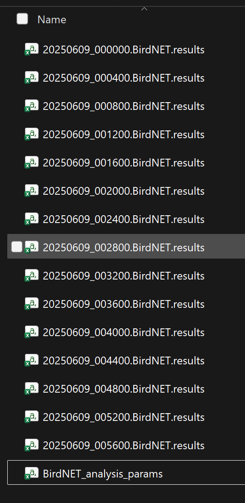
Working with BirdNET output
Data import
- Identify the path to the BirdNET output folder:
[1] "C:/Users/sunny/Dropbox/work_remotely/2026_11_IOC in Merida/1. BirdNET workshop/slides/birdnet_analysis_example_output"- Import the BirdNET output with
birdnet_combine():
Data exploration
Sometimes we need more than just the detection. For example…
- Add date and time information with
birdnet_add_datetime():
✔ Parsed datetime for 105 of 105 file names.This function automatically detects the date / time from the file name
And mutates eight date / time columns:
Data exploration (con’d) 🌶️
- Default setting of
birdnet_add_datetime()covers most of the formats:
c("%Y%m%dT%H%M%S", "%Y%m%d%H%M%S", "%Y%m%d_%H%M%S", "%Y%m%d_%H%M",
"%d%m%Y_%H%M%S", "%m%d%Y_%H%M%S")- But, if the datetime format is special, it could fail:
predictions_fail <- predictions[1:3,] |>
dplyr::mutate(File = c("E:\\Audio\\2023_passerine\\14_18\\00014530_20230518T1335.WAV",
"E:\\Audio\\2023_passerine\\14_18\\051820231335.WAV",
"E:\\Audio\\2023_passerine\\14_18\\18052023133500.WAV"))
birdnet_add_datetime(predictions_fail)! 3 of 3 file names could not be parsed into a datetime.ℹ Default `formats` may not match your file names. See `?birdnet_add_datetime()` to define your own.# A tibble: 3 × 14
`Start (s)` `End (s)` `Scientific name` `Common name` Confidence File
<dbl> <dbl> <chr> <chr> <dbl> <chr>
1 0 3 Phalacrocorax carbo Great Cormorant 0.359 "E:\…
2 3 6 Phalacrocorax carbo Great Cormorant 0.300 "E:\…
3 6 9 Ficedula parva Red-breasted Flyca… 0.486 "E:\…
# ℹ 8 more variables: datetime <dttm>, date <date>, year <dbl>, month <dbl>,
# mday <int>, yday <dbl>, hour <int>, minute <int>Data exploration (con’d) 🌶️
- Set customized format with the
formatsargument:
predictions_fail |> birdnet_add_datetime(formats = c("%Y%m%dT%H%M", # <- user-defined format
"%m%d%Y%H%M",
"%d%m%Y%H%M%S"))✔ Parsed datetime for 3 of 3 file names.# A tibble: 3 × 14
`Start (s)` `End (s)` `Scientific name` `Common name` Confidence File
<dbl> <dbl> <chr> <chr> <dbl> <chr>
1 0 3 Phalacrocorax carbo Great Cormorant 0.359 "E:\…
2 3 6 Phalacrocorax carbo Great Cormorant 0.300 "E:\…
3 6 9 Ficedula parva Red-breasted Flyca… 0.486 "E:\…
# ℹ 8 more variables: datetime <dttm>, date <date>, year <dbl>, month <dbl>,
# mday <int>, yday <dbl>, hour <int>, minute <int>Data exploration (con’d)
- Add location information with
birdnet_add_site():
✔ Extracted site info from 105 of 105 file names.- Recordings from the same site should be in the same folder, and the folder name has to contain the site name
Data exploration (con’d)
- Filter the detection with
birdnet_filter():
Data exploration (con’d) 🌶️
- Quick visualization with
birdnet_heatmap():
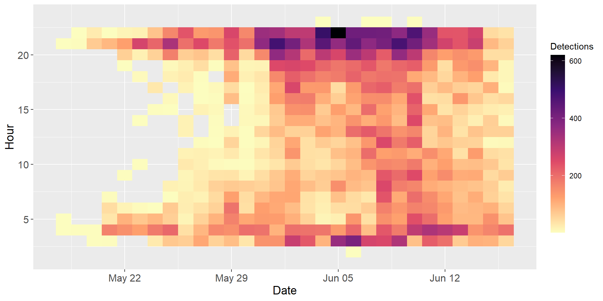
Your turn 🦉
⏱ 10 minutes
Data: ./practice_batch_analysis/
- Which date was the recordings collected from?
- How many detections does Great Cormorant have, with confidence > 0.3?
Hint
Your turn 🔑
- 2025 Jun. 9th!
- BTW, my birthday!
- Four detections :)
Solution
Data validation
Why do we need to validate detections?
- BirdNET is not perfect
- Differs by bird species
- Validation - peak into that imperfection
- Four types of predictions results:

Two types of accuracy
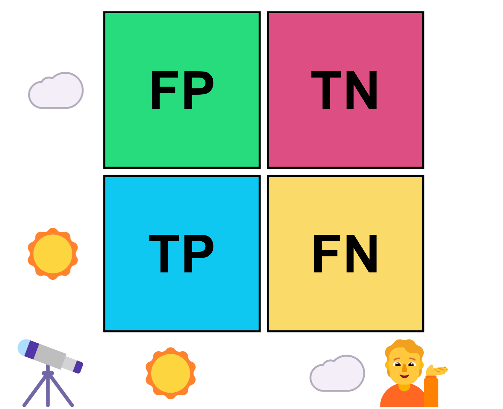
Precision
When the weather forecast says it’s sunny, how likely is that statement to be true?
Recall
When it’s sunny, how likely is it that the forecast accurately predicted the sun?
Accuracy in bird context
We need to know if the audio actually contains the target bird species
Prediction - BirdNET
Observed - human validation
Then we can assign the detection to one of FP/TP/TN/FN
Validate many detections -> get precision and recall
Accuracy in bird context
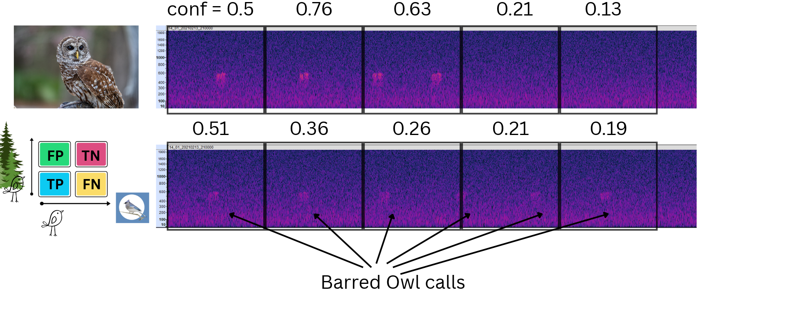
Accuracy in bird context
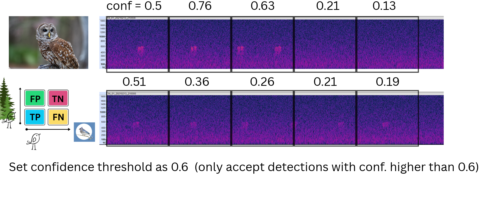
Accuracy in bird context
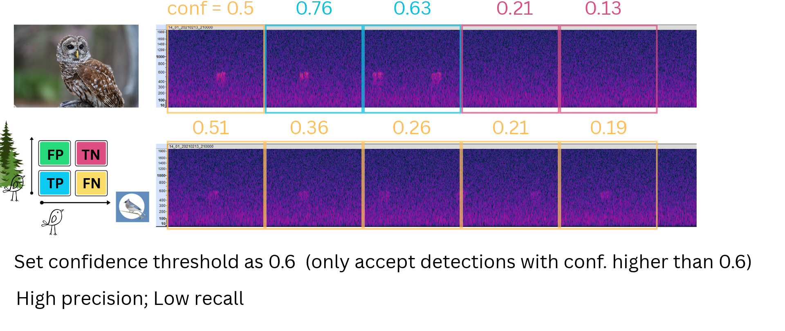
Accuracy in bird context
Accuracy in bird context
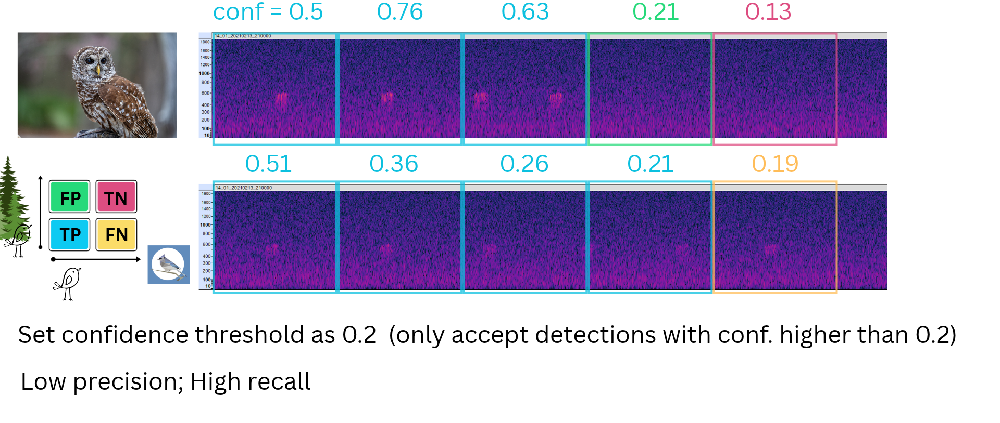
Validation in R
There are four functions in birdnetTools to do validation in R
Subsample the detections to validate with
birdnet_subsample()Extract a short audio clip for each of them into one folder with
birdnet_extract_clips()Validate the clips in a Shiny app launched by
birdnet_launch_validation()Calculate a species-specific threshold with
birdnet_calc_threshold()
Full instructins can be found in
birdnetToolsdocumentation
Validate clips in R 🌶️
- Subsampled detections for validate:
./practice_vlidation/ - For those who are curious how I created the folder:
- We want to label each detection as TP (accurate) or FP (false positive)
- Run
birdnet_launch_validation()to open the Shiny validation app
Validate clips in R 🌶️
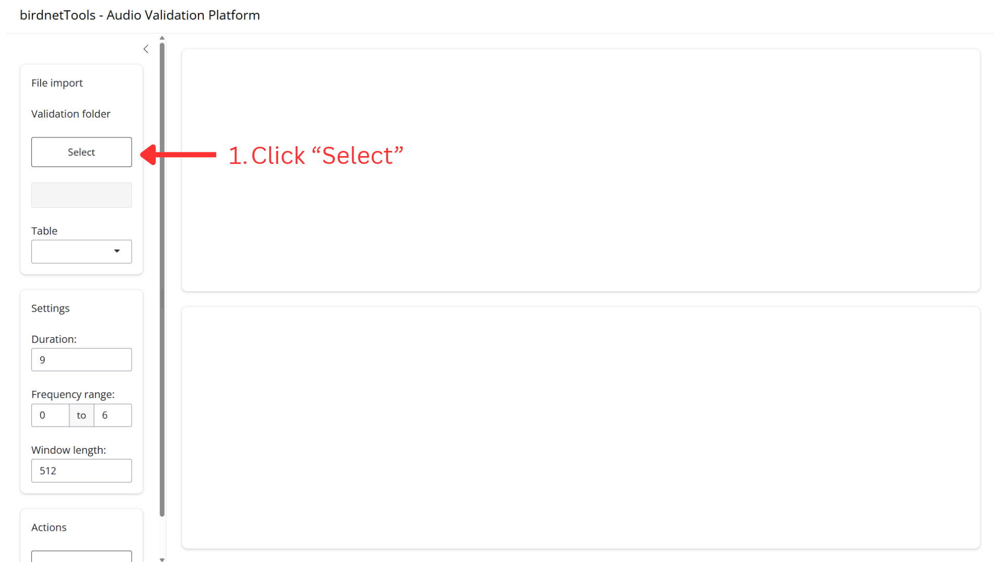
Validate clips in R 🌶️

Validate clips in R 🌶️
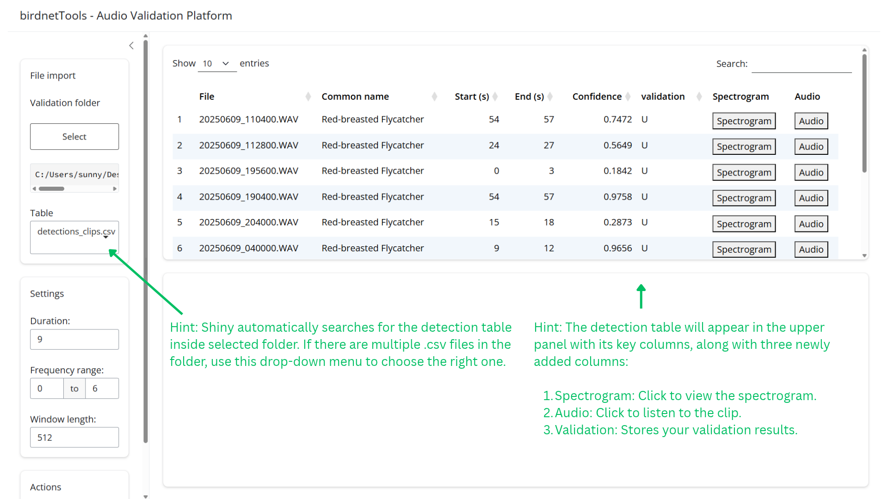
Validate clips in R 🌶️
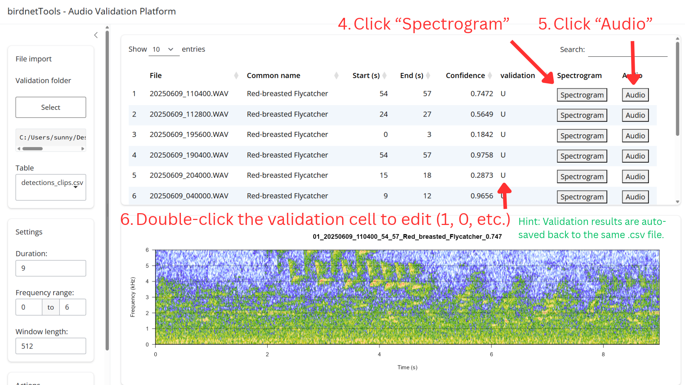
Your turn 🦉
⏱ 10 minutes
Data: ./practice_vlidation/
- Import the folder
- Visualize / listen to the detections
- Challenge: Edit the vlidation result, check CSV
Hint
Your turn 🔑
Solution
Play a game with BirdNET, in R! 🌶️
Beat the BirdNET 🐦
A bird guessing game, designed with BirdNET
How to play
- Player A picks a random recording
- The Group listens and guesses the species
- BirdNET reveals its guess
- We see who is right! ❤️
How I made the game
Explore / download Mérida birds on Xeno-Canto →
suwoRead and check the audio in R →
tuneR,seewaveIdentify species with BirdNET →
birdnetR
Step 1: Explore bird sounds
Xeno-Canto: ~1 million wildlife recordings, shared under CC licenses

Query Merida recordings
Use the query_xenocanto() function from the suwo package:
Merida area, songs, high quality recordings (109 recordings from 47 species):
Download and read into R
Use the download_media() function from the suwo package:
Batch download:
Step 2: Read and check audio in R
Use the readWave() or readMP3() function from the tuneR package:
Let’s read one audio in the audio_dir folder:
audio_path <- tibble(path = list.files(audio_dir, pattern = "\\.(mp3|wav)$",
full.names = TRUE, ignore.case = TRUE)) |>
mutate(modified = file.mtime(path)) |>
slice_min(modified, n = 1) |>
pull(path)
audio_path[1] "C:/Users/sunny/Dropbox/work_remotely/2026_11_IOC in Merida/1. BirdNET workshop/slides/audio/Ortalis_vetula-XC872247.wav"Check the file extension and read it accordingly:
Listen
To listen, use the play() function from the tuneR package:
Indicate the audio object:
Look
To visualize, use the spectro() function from the seewave package:
Indicate the audio abject:
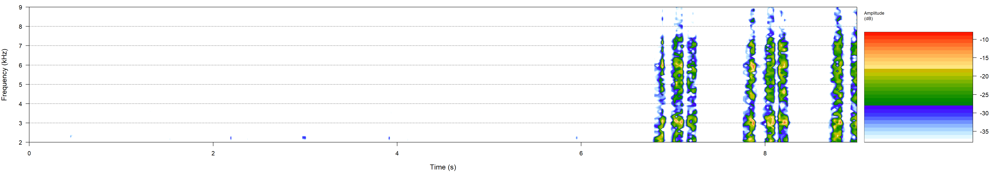
- x-axis: time, y-axis: pitch, darkness: loudness
- Every species has a “shape” you can learn to read
Step 3: What does the BirdNET say?
Use the birdnet_predict() function from the birdnetR package.
Load model and run prediction:
Put everything together
How to play
- Player A picks a random recording
- The Group listens and guesses the species
- BirdNET reveals its guess
- We see who is right! ❤️
Ready to “Beat the BirdNET”? 🎮
Final peek for our answer sheet
A total of 109 recordings from 47 species
🎮 Who’s singing?
birds = transpose(game)
viewof i = Inputs.number([1, birds.length],
{step: 1, value: 1, label: `Pick a number (1–${birds.length})`})
bird = birds[i - 1]
html`<audio controls src="${bird.audio}" style="width:100%"></audio>`birds = transpose(game)
viewof i = Inputs.number([1, birds.length],
{step: 1, value: 1, label: `Pick a number (1–${birds.length})`})
bird = birds[i - 1]
html`<audio controls src="${bird.audio}" style="width:100%"></audio>`🐦 And the answer is…
detections.length === 0
? md`No detection`
: Inputs.table(detections, {
columns: ["start", "end", "common_name", "scientific", "confidence"],
header: {start: "Start (s)", end: "End (s)", common_name: "Common name",
scientific: "Scientific name", confidence: "Confidence"},
format: {confidence: x => x.toFixed(2)},
height: 350})detections.length === 0
? md`No detection`
: Inputs.table(detections, {
columns: ["start", "end", "common_name", "scientific", "confidence"],
header: {start: "Start (s)", end: "End (s)", common_name: "Common name",
scientific: "Scientific name", confidence: "Confidence"},
format: {confidence: x => x.toFixed(2)},
height: 350})md`**Xeno-Canto label (the answer):**
*${bird.species}*, recorded by ${bird.user_name} (XC${bird.key})`md`**Xeno-Canto label (the answer):**
*${bird.species}*, recorded by ${bird.user_name} (XC${bird.key})`Hope you had fun!
Having fun is probably most important above all! :)
Recap: BirdNET in R
birdnetR
- Single / batch analysis
birdnetTools
- Import detection results
- Explore (add metadata, filter, visualize)
- Vlidate detections
Recap: BirdNET in R (con’d)

Thank you
Sunny Tseng, independent ecological consultant Contact: sunny@sunnytseng.ca Website: sunnytseng.ca
Enjoy the conference!
Card, sticker and photo?